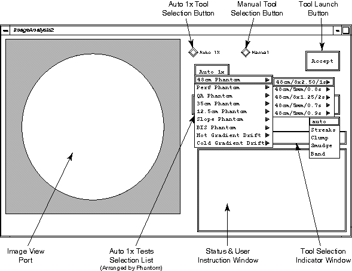
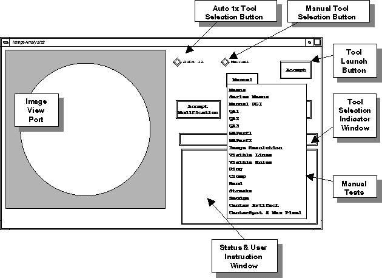
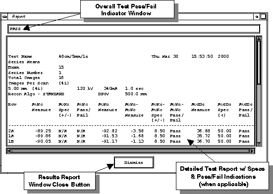

Proprietary to General Electric
Direction 5193755-800, Rev# 8
BrightSpeed (Ltd. Access) Service Methods - Adv
Proprietary to General Electric |
The Auto 1x Image Analysis Tool provides the ability to quantitatively measure system image quality based on various performance factors. The tool automatically sets measurement ROI’s based on the performance test applied, rather than having the user manually adjust ROI’s in the Image Works desktop. In addition, the tool automatically applies design specifications and Pass/Fail indications for the acquisition series of five different phantoms based on standard Service Image Series protocols. The tool is set up to provide a set of Manual and Auto 1x measurement sub-tools.
The Manual sub-tools (see Illustration 2) automatically set unique measurement ROI’s based on an individual image or set of images (within a series) that the user selects from the Service Browser Window. Result measurements of Manual sub-tool tests are displayed in a Report Window without comparison to specifications or an indication of Pass/Fail.
The Auto 1x sub-tests (see Illustration 1) automatically run various combinations of Manual sub-tools on standard series of images acquired using the standard Service Image Series protocols. The user also must select the appropriate series from the Service Browser Window. Result measurements of the combinations of Manual sub-tool tests are displayed in a report Window with comparisons to specifications and indications of Pass or Fail.
The Auto 1x Image Analysis Tool is selectable from the [SERVICE DESKTOP] under [IMAGE QUALITY TESTS] only when the security key is installed.
Illustration 1: Image Analysis Tool User Interface - Auto 1x Test Pull Down Menu

| NOTE: | The actual items shown on the pull down menus may be different depending on your system type. |
The following is an example sequence of invoking the Manual [CENTER ARTIFACT] sub-tool:
Select the exam/series/image from the List/Select Browser.
Place cursor over the Image Analysis GUI Window; press [ALT/F1] to bring the window forward.
Click the diamond shaped [MANUAL] button to display the rectangular [MANUAL] button.
Click the [MANUAL] button to display the Manual Test pull-down menu.
In the Manual pull-down menu, drag cursor to the [CENTER ARTIFACT] .
Click on the [ACCEPT] button to launch the analysis. The tool image view port displays the image and places ROI (Region-of-Interest) cursors on the image specifically for image artifact.
The tool calculates the center artifact and t-value for the selected image, and displays the results in a Results Report Window (refer to Illustration 3).
Record the data, when necessary, on the Image Series Data Sheet.
Dismiss the Report Window by clicking on the [DISMISS] button. Dismiss the Image Analysis Window by clicking on the [QUIT] button.
Illustration 2: Image Analysis Tool User Interface - Manual Test Pull Down Menu

Illustration 3: Image Analysis Tool User Interface - Test Results Report Window

The following is a brief description of each of the Manual Image Analysis sub-tools and the specifications they apply:
Clump: The tool takes a 41x41 pixel box and 9x9 inner pixel box at ISO along with applying a 3.0 sigma factor generating lower and upper pixel limits for that image. Any pixels outside the lower and upper limit computed by the tool within the 9x9 center of pixels are reported in the Report Window. The tool has the ability to analyze a single image or multiple images at a time within a series (user must select images from the Service Browser).
Center Smudge: The tool uses a 41x41 ellipse and a 13x13 ellipse at ISO and reports the difference between them as the smudge factor. The tool has the ability to analyze a single image or multiple images at a time within a series (user must select images from the Service Browser).
Center Artifact: The tool uses 41x41 box and a 2x2 pixel box at the ISO and calculates the center artifact sigma factor and t-value. The tool has the ability to analyze a single image or multiple images at a time within a series (user must select images from the Service Browser).
Center Spot & Max Pixel: The tool uses 41x41 box and a 2x2 pixel box at the ISO and calculates the Center Spot Factor and T-Value. In addition, the tool calculates Max Pixel Values. The tool has the ability to analyze a single image or multiple images at a time within a series (user must select images from the Service Browser).
Ring: The tool puts up a 30° arc cursor that the user positions (using the left mouse button) over a ring in an image displayed in the tool image view-port. Clicking the [ACCEPT MODIFICATION] button brings up a reference 39x39 ROI box that is moveable. Clicking the [ACCEPT MODIFICATION] a third time launches the analysis with the Report Window displaying the ring factor and t-value. The tool only allows analysis of a single image at a time.
Band: Similar to the ring, except that a band is seen on the image instead of an arc. The user positions and resizes the band ROI over a band displayed in the tool image view-port, Clicking the [ACCEPT MODIFICATION] button displays two reference ROI bands on either side of the Band ROI. Clicking the [ACCEPT MODIFICATION] a third time launches the analysis with the Report Window displaying the band factor and t-value. The tool only allows analysis of a single image at a time.
Streak: The tool places a line cursor that the user positions and resizes (using the left mouse button) over a streak in an image displayed in the in the tool image view-port. Clicking the [ACCEPT MODIFICATION] button displays a reference 39x39 ROI box that is moveable. Clicking the [ACCEPT MODIFICATION] a third time launches the analysis with the Report Window displaying the streak factor, and t-value. The tool only allows analysis of a single image at a time.
Means: The tool measures the means and standard deviation averages of four fixed (size and position) outer ROI boxes and the means and standard deviation of one inner ROI box of an image displayed in the tool image view-port. The size and position of the ROI boxes are determined by the phantom type and Scan Field of View (SFOV) of the image. The tool can analyze a single image or multiple images at a time within a series (user must select images from the Service Browser).
Series Means: Similar to the Means tool, the Series Means tool measures the means and standard deviation averages of four fixed (size and position) outer ROI boxes and the means and standard deviation of one fixed inner ROI box. The Series Means tool reports the row averages of these values for all images in a series with the addition of reporting the row average difference of the means of the outside ROI boxes and the means of the inner ROI boxes (AvXo - AvXc). The tool only analyzes a series of images (user must select the series from the Service Browser).
QA#1: The tool places three 17x17 pixel box ROIs and computes the MTF and contrast scale for each image in a four image 20cm QA Phantom series. The Report Window displays the MTF value for each image, the four image average MTF value, and the Contrast Scale value for each individual image. The tool is designed specifically for the 1st four-image series of the 20cm QA Phantom standard acquisition protocol ( [20:12 IMAGE SERIES QA] ).
QA#2: The tool places a fixed 49x9 (256, 200) ROI, and a fixed 49x9 (256, 235) ROI and reports the difference between their means as the contrast factor. The tool has the ability to analyze a single image or multiple images at a time within a series (user must select images from the Service Browser). The tool is designed specifically for the 3rd eight-image series of the 20cm QA Phantom standard acquisition protocol ( [20:12 IMAGE SERIES QA] ).
QA#3: The tool places a fixed 51x51 pixel box and reports the mean and standard deviation as a two-row average (2A1A and 1B2B). The tool is designed specifically for the 4th series of the 20cm QA Phantom standard acquisition protocol ( [20:12 IMAGE SERIES QA] ).
Manual ROI: The tool places a 14cmx14cm ROI box at ISO on the image. The user has the ability to adjust the size and position of the ROI box using the left mouse button. Clicking the [ACCEPT MODIFICATION] button launches an analysis of the means and standard deviation of the ROI box. reports the ROI statistics including means and standard deviation. The tool has the ability to analyze a single image or multiple images at a time within a series (user must select images from the Service Browser), with the ROI box size and position applied to all the selected images.
Image Resolution: The tool positions fixed ROIs on the image and reports the 50% and 10% MTF factors. In addition, the tool calculates a four-image average of 50% and 10% MTF values. This too is designed specifically for the two, 32 image, GE Performance Phantom series (the 2nd series is a Edge Recon of the 1st series) acquisition protocol ( [20:11 IMAGE SERIES PP] ).
GE Perf#1: The tool positions two 17x17 pixel boxes, at (204,180) and other at (221, 102) and reports means, standard deviation and contrast scale.
GE Perf#2: The tool positions two fixed boxes, each size 205x11, at positions (256,256) and (256,276); performs the mean subtraction between these two ROIs; and reports the difference as contrast factor.
Visible Lines: The test routine executes a Visible Lines Test that allows the user to enter a letter code value for the number of 6 line pair resolution patterns displayed in the image in the tool Image Viewport. The user must select each image, one at a time, from the Service Browser Window to analyze all four images in the series. The Report Window will not display a Pass/Fail indication based on the number of letter code values that the user should be able to visualize (specifications are only applied in the Auto 1x QA#1 Lines Test). The tool is designed specifically for a 4 image series acquired using the scan parameters of the 2nd (Bone Recon of Series 1) 20cm QA Phantom Image Series Scan Protocol listed in the Miscellaneous Menu ( [20:12 IMAGE SERIES QA] ).
Visible Holes: The test routine executes a Visible Holes Test that allows the user to enter a number code value for the number of holes displayed in the image in the tool Image Viewport. The user must select each image, one at a time, from the Service Browser Window to analyze the 1st, 3rd, 5th, and 7th images in the series. The Report Window will not display a Pass/Fail indication based on the number of number code values that the user should be able to visualize for a tool measured Contrast Factor. The tool is designed specifically for an 8 image series acquired using the scan parameters of the 3rd 20cm QA Phantom Image Series Scan Protocol listed in the Miscellaneous Menu ( [20:12 IMAGE SERIES QA] ).
The following are brief descriptions of the Auto 1x Image Analysis sub-test routines and the Manual sub-tools they apply:
48cm/8x2.50/1s: The test routine offers Auto, Streak Artifact, Band Artifact, and Center Smudge tests that apply design specifications for these Manual sub-tools and displays a Pass/Fail indication in the Test Results Report Window where applicable. The Auto routine performs a combination of a Series Means and Center Smudge tests on an entire series of images. The Center Smudge routine also analyzes the entire series. The specifications apply to a series of 32 images acquired using the scan parameters of the 1st 48cm Image Series Scan Protocol listed in the Miscellaneous Menu (20:10 IMAGE SERIES 48 CM).
48cm/5mm/0.8s: The test routine offers Auto, Ring Artifact, Streak Artifact, Band Artifact, Clump Artifact, and Center Smudge tests that apply design specifications for these Manual sub-tools and indicate a Pass/Fail indication, where applicable. The Auto routine performs a combination of a Series Means, Clump Artifact, and Center Smudge tests on an entire series of images. The Ring, Streak, and Band routines analyze one image at time. The Clump and Center Smudge routines analyze the entire series. The specifications apply to a series of 16 images acquired using the scan parameters of the 2nd 48cm Image Series Scan Protocol listed in the Miscellaneous Menu ( [20:10 IMAGE SERIES 48 CM] ).
48cm/8x1.25/1s: The test routine offers Auto, Streak Artifact, Band Artifact, and Center Smudge tests that apply design specifications for these Manual sub-tools and displays a Pass/Fail indication in the Test Results Report Window where applicable. The Auto routine performs a combination of a Series Means and Center Smudge tests on an entire series of images. The Center Smudge routine also analyzes the entire series. The specifications apply to a series of 32 images acquired using the scan parameters of the 3rd 48cm Image Series Scan Protocol listed in the Miscellaneous Menu (20:10 IMAGE SERIES 48 CM).
48cm/5mm/0.7s: The test routine offers Auto, Ring Artifact, Streak Artifact, Band Artifact, Clump Artifact, and Center Smudge tests that apply design specifications for these Manual sub-tools and displays a Pass/Fail indication in the Test Results Report Window where applicable. The Auto routine performs a combination of a Series Means, Clump Artifact, and Center Smudge tests on an entire series of images. The Clump Artifact and Center Smudge routines also analyze the entire series. The specifications apply to a series of 16 images acquired using the scan parameters of the 4th 48cm Image Series Scan Protocol listed in the Miscellaneous Menu (20:10 IMAGE SERIES 48 CM).
48cm/5mm/0.9s: The test routine offers Auto, Ring Artifact, Streak Artifact, Band Artifact, Clump Artifact, and Center Smudge tests that apply design specifications for these Manual sub-tools and displays a Pass/Fail indication in the Test Results Report Window where applicable. The Auto routine performs a combination of a Series Means, Clump Artifact, and Center Smudge tests on an entire series of images. The Clump Artifact and Center Smudge routines also analyze the entire series. The specifications apply to a series of 16 images acquired using the scan parameters of the 5th 48cm Image Series Scan Protocol listed in the Miscellaneous Menu (20:10 IMAGE SERIES 48 CM).
PP#1/S1/I1-7: The test routine executes an Image Resolution Test that applies four-image design specifications (50% MTF and 10% MTF) for this Manual sub-tool, and gives a Pass/Fail indication, where applicable. The specifications apply to 4 images of a 32 image series acquired using the scan parameters of the 1st 20cm Performance Phantom Image Series Scan Protocol listed in the Miscellaneous Menu ( [20:11 IMAGE SERIES PP] ).
PP#1/S1/I10-16: The test routine executes an Image Resolution Test that applies four-image design specifications (50% MTF and 10% MTF) for this Manual sub-tool and indicates a Pass/Fail indication, where applicable. The specifications apply to 4 images of a 32 image series acquired using the scan parameters of the 1st 20cm Performance Phantom Image Series Scan Protocol listed in the Miscellaneous Menu ( [20:11 IMAGE SERIES PP] ).
PP#1/S1/I17-23: The test routine executes an Image Resolution Test that applies four-image design specifications (50% MTF and 10% MTF) for this Manual sub-tool and indicates a Pass/Fail indication, where applicable. The specifications apply to 4 images of a 32 image series acquired using the scan parameters of the 1st 20cm Performance Phantom Image Series Scan Protocol listed in the Miscellaneous Menu ( [20:11 IMAGE SERIES PP] ).
PP#1/S1/I26-32: The test routine executes an Image Resolution Test that applies four-image design specifications (50% MTF and 10% MTF) for this Manual sub-tool and indicates a Pass/Fail indication, where applicable. The specifications apply to 4 images of a 32 image series acquired using the scan parameters of the 1st 20cm Performance Phantom Image Series Scan Protocol listed in the Miscellaneous Menu ( [20:11 IMAGE SERIES PP] ).
PP#1/S2/I1-7: The test routine executes an Image Resolution Test that applies four-image design specifications (50% MTF and 10% MTF) for this Manual sub-tool and indicates a Pass/Fail indication, where applicable. The specifications apply to 4 images of a 32 image series acquired using the scan parameters of the 2nd (Edge Recon of Series 1) 20cm Performance Phantom Image Series Scan Protocol listed in the Miscellaneous Menu ( [20:11 IMAGE SERIES PP] ).
PP#1/S2/I10-16: The test routine executes an Image Resolution Test that applies four-image design specifications (50% MTF and 10% MTF) for this Manual sub-tool and indicates a Pass/Fail indication, where applicable. The specifications apply to 4 images of a 32 image series acquired using the scan parameters of the 2nd (Edge Recon of Series 1) 20cm Performance Phantom Image Series Scan Protocol listed in the Miscellaneous Menu ( [20:11 IMAGE SERIES PP] ).
PP#1/S2/I17-23: The test routine executes an Image Resolution Test that applies four-image design specifications (50% MTF and 10% MTF) for this Manual sub-tool and indicates a Pass/Fail indication, where applicable. The specifications apply to 4 images of a 32 image series acquired using the scan parameters of the 2nd (Edge Recon of Series 1) 20cm Performance Phantom Image Series Scan Protocol listed in the Miscellaneous Menu ( [20:11 IMAGE SERIES PP] ).
PP#1/S2/I26-32: The test routine executes an Image Resolution Test that applies four-image design specifications (50% MTF and 10% MTF) for this Manual sub-tool and indicates a Pass/Fail indication, where applicable. The specifications apply to 4 images of a 32 image series acquired using the scan parameters of the 2nd (Edge Recon of Series 1) 20cm Performance Phantom Image Series Scan Protocol listed in the Miscellaneous Menu ( [20:11 IMAGE SERIES PP] ).
QA#1 MTF: The test routine executes a QA#1 Test that applies four-image design specifications (MTF) and Contrast Scale for this Manual sub-tool and indicates a Pass/Fail indication, where applicable. The specifications apply to a 4 image series acquired using the scan parameters of the 1st 20cm QA Phantom Image Series Scan Protocol listed in the Miscellaneous Menu ( [20:12 IMAGE SERIES QA] ).
QA#1/Lines/1.0s, QA#1/Lines/0.5s, QA#1/Lines/0.6s: The test routine executes a Visible Lines Test that allows the user to enter a letter code value for the number of 6 line pair resolution patterns displayed in the image in the tool Image Viewport. The user must select each image, one at a time, from the Service Browser Window to analyze all 4 images in the series. The Report Window displays a Pass/Fail indication based on the number of letter code values that the user should be able to visualize. The specifications apply to a 4 image series acquired using the scan parameters of the 2nd (Bone Recon of Series 1) 20cm QA Phantom Image Series Scan Protocol listed in the Miscellaneous Menu (20:12 image series QA).
QA#2 Holes: The test routine executes a Visible Holes Test that allows the user to enter a number code value for the number of holes displayed in the image in the tool Image Viewport. The user must select each image, one at a time, from the Service Browser Window to analyze the 1st, 3rd, 5th, and 7th images in the series. The Report Window indicates a Pass/Fail indication based on the number of number code values that the user should be able to visualize for a tool measured Contrast Factor. The specifications apply to an 8 image series acquired using the scan parameters of the 3rd 20cm QA Phantom Image Series Scan Protocol listed in the Miscellaneous Menu ( [20:12 IMAGE SERIES QA] ).
QA#3 Small/1s: The test routine offers Auto, Ring Artifact, Streak Artifact, Band Artifact, Center Artifact, and Center Smudge tests that apply design specifications for these Manual sub-tools and indicate a Pass/Fail indication where applicable. The Auto routine performs a combination of a Series Means, QA#3, Center Artifact, and Center Smudge tests on an entire series of images. The Ring, Streak, and Band routines analyze one image at time. The Center Artifact and Center Smudge routines analyze the entire series. The specifications apply to an 8 image series acquired using the scan parameters of the 4th 20cm QA Phantom Image Series Scan Protocol listed in the Miscellaneous Menu ( [20:12 IMAGE SERIES QA] ).
QA#3 Large: The test routine only performs a Series Means test on an entire series of images. The specifications apply to a 16 image series acquired using the scan parameters of the 5th 20cm QA Phantom Image Series Scan Protocol listed in the Miscellaneous Menu ( [20:12 IMAGE SERIES QA] ).
QA#3 Small/0.5s: The test routine offers Auto, Ring Artifact, Streak Artifact, Band Artifact, Center Artifact, and Center Smudge tests that apply design specifications for these Manual sub-tools and displays a Pass/Fail indication in the Test Results Report Window where applicable. The Auto routine performs a combination of a Series Means, QA#3, Center Artifact, and Center Smudge tests on an entire series of images. The Center Artifact and Center Smudge routines also analyze the entire series. The specifications apply to a series of 16 images acquired using the scan parameters of the 7th 20cmQA Image Series Scan Protocol listed in the Miscellaneous Menu (20:12 IMAGE SERIES QA).
QA#3/8x1.25/2s: The test routine offers Auto, Ring Artifact, Streak Artifact, Band Artifact, Center Artifact, and Center Smudge tests that apply design specifications for these Manual sub-tools and indicate a Pass/Fail indication, where applicable. The Auto routine performs a combination of a Series Means, Center Artifact, and Center Smudge tests on an entire series of images. The Ring, Streak, and Band routines analyze one image at time. The Center Artifact and Center Smudge routines analyze the entire series. The specifications apply to a 16 image series acquired using the scan parameters of the 6th 20cm QA Phantom Image Series Scan Protocol listed in the Miscellaneous Menu ( [20:12 IMAGE SERIES QA] ).
QA#3/5/1s: The test routine offers Auto, Ring Artifact, Streak Artifact, Band Artifact, Center Artifact, and Center Smudge tests that apply design specifications for these Manual sub-tools and indicate a Pass/Fail indication, where applicable. The Auto routine performs a combination of a Series Means, Center Artifact, and Center Smudge tests on an entire series of images. The Ring, Streak, and Band routines analyze one image at time. The Center Artifact and Center Smudge routines analyze the entire series. The specifications apply to a 16 image series acquired using the scan parameters of the 7th 20cm QA Phantom Image Series Scan Protocol listed in the Miscellaneous Menu ( [20:12 IMAGE SERIES QA] ).
QA#3/8x2.50/2s: The test routine offers Auto, Ring Artifact, Streak Artifact, Band Artifact, Center Artifact, and Center Smudge tests that apply design specifications for these Manual sub-tools and indicate a Pass/Fail indication, where applicable. The Auto routine performs a combination of a Series Means, Center Artifact, and Center Smudge tests on an entire series of images. The Ring, Streak, and Band routines analyze one image at time. The Center Artifact and Center Smudge routines analyze the entire series. The specifications apply to a 16 image series acquired using the scan parameters of the 8th 20cm QA Phantom Image Series Scan Protocol listed in the Miscellaneous Menu ( [20:12 IMAGE SERIES QA] ).
QA#3/1x1.25/2s: The test routine offers Auto, Ring Artifact, Streak Artifact, Band Artifact, Center Artifact, and Center Smudge tests that apply design specifications for these Manual sub-tools and indicate a Pass/Fail indication, where applicable. The Auto routine performs a combination of a Series Means, Center Artifact, and Center Smudge tests on an entire series of images. The Ring, Streak, and Band routines analyze one image at time. The Center Artifact and Center Smudge routines analyze the entire series. The specifications apply to a 4 image series acquired using the scan parameters of the 9th 20cm QA Phantom Image Series Scan Protocol listed in the Miscellaneous Menu ( [20:12 IMAGE SERIES QA] ).
QA#3/2x0.63/2s: The test routine offers Auto, Ring Artifact, Streak Artifact, Band Artifact, Center Artifact, and Center Smudge tests that apply design specifications for these Manual sub-tools and displays a Pass/Fail indication in the Test Results Report Window where applicable. The Auto routine performs a combination of a Series Means, Center Artifact, and Center Smudge tests on an entire series of images. The Center Artifact and Center Smudge routines also analyze the entire series. The specifications apply to a series of 8 images acquired using the scan parameters of the 12th 20cmQA Image Series Scan Protocol listed in the Miscellaneous Menu (20:12 IMAGE SERIES QA).
35cm/5mm/1s: The test routine offers Auto, Ring Artifact, Streak Artifact, Band Artifact, Center Artifact, and Center Smudge tests that apply design specifications for these Manual sub-tools and indicate a Pass/Fail indication, where applicable. The Auto routine performs a combination of a Series Means, Center Artifact, and Center Smudge tests on an entire series of images. The Ring, Streak, and Band routines analyze one image at time. The Center Artifact and Center Smudge routines analyze the entire series. The specifications apply to a 16 image series acquired using the scan parameters of the 1st 35cm Poly Phantom Image Series Scan Protocol listed in the Miscellaneous Menu ( [20:13 IMAGE SERIES 35 CM] ).
35cm/3.75mm/3s: The test routine offers Auto, Ring Artifact, Streak Artifact, Band Artifact, Center Artifact, and Center Smudge tests that apply design specifications for these Manual sub-tools and indicate a Pass/Fail indication, where applicable. The Auto routine performs a combination of a Series Means, Center Artifact, and Center Smudge tests on an entire series of images. The Ring, Streak, and Band routines analyze one image at time. The Center Artifact and Center Smudge routines analyze the entire series. The specifications apply to a 16 image series acquired using the scan parameters of the 2nd 35cm Poly Phantom Image Series Scan Protocol listed in the Miscellaneous Menu ( [20:13 IMAGE SERIES 35 CM] ).
35cm/2.5mm/2s: The test routine offers Auto, Ring Artifact, Streak Artifact, Band Artifact, Center Artifact, and Center Smudge tests that apply design specifications for these Manual sub-tools and indicate a Pass/Fail indication, where applicable. The Auto routine performs a combination of a Series Means, Center Artifact, and Center Smudge tests on an entire series of images. The Ring, Streak, and Band routines analyze one image at time. The Center Artifact and Center Smudge routines analyze the entire series. The specifications apply to a 16 image series acquired using the scan parameters of the 3rd 35cm Poly Phantom Image Series Scan Protocol listed in the Miscellaneous Menu ( [20:13 IMAGE SERIES 35 CM] ).
35cm/1.25mm/0.5s: The test routine offers Auto, Streak Artifact, Band Artifact, Center Artifact, and Center Smudge tests that apply design specifications for these Manual sub-tools and indicate a Pass/Fail indication, where applicable. The Auto routine performs a combination of a Series Means, Center Artifact, and Center Smudge tests on an entire series of images. The Ring, Streak, and Band routines analyze one image at time. The Center Artifact and Center Smudge routines analyze the entire series. The specifications apply to a 16 image series acquired using the scan parameters of the 4th 35cm Poly Phantom Image Series Scan Protocol listed in the Miscellaneous Menu ( [20:13 IMAGE SERIES 35 CM] ).
35cm/8x1.25/2s: The test routine offers Auto, Streak Artifact, Band Artifact, Center Artifact, and Center Smudge tests that apply design specifications for these Manual sub-tools and displays a Pass/Fail indication in the Test Results Report Window where applicable. The Auto routine performs a combination of a Series Means, Center Artifact, and Center Smudge tests on an entire series of images. The Center Artifact and Center Smudge routines also analyze the entire series. The specifications apply to a series of 32 images acquired using the scan parameters of the 5th 35cm Poly Phantom Image Series Scan Protocol listed in the Miscellaneous Menu (20:13 IMAGE SERIES 35 CM).
35cm/8x2.50/2s: The test routine offers Auto, Ring Artifact, Streak Artifact, Band Artifact, Center Artifact, and Center Smudge tests that apply design specifications for these Manual sub-tools and displays a Pass/Fail indication in the Test Results Report Window where applicable. The Auto routine performs a combination of a Series Means, Center Artifact, and Center Smudge tests on an entire series of images. The Center Artifact and Center Smudge routines also analyze the entire series. The specifications apply to a series of 32 images acquired using the scan parameters of the 6th 35cm Poly Phantom Image Series Scan Protocol listed in the Miscellaneous Menu (20:13 IMAGE SERIES 35 CM).
35cm/1x1.25mm/2s: The test routine offers Auto, Streak Artifact, Band Artifact, Center Artifact, and Center Smudge tests that apply design specifications for these Manual sub-tools and indicate a Pass/Fail indication, where applicable. The Auto routine performs a combination of a Series Means, Center Artifact, and Center Smudge tests on an entire series of images. The Ring, Streak, and Band routines analyze one image at time. The Center Artifact and Center Smudge routines analyze the entire series. The specifications apply to a 4 image series acquired using the scan parameters of the 5th 35cm Poly Phantom Image Series Scan Protocol listed in the Miscellaneous Menu ( [20:13 IMAGE SERIES 35 CM] ).
35cm/2x0.63/2s: The test routine offers Auto, Streak Artifact, Band Artifact, Center Artifact, and Center Smudge tests that apply design specifications for these Manual sub-tools and displays a Pass/Fail indication in the Test Results Report Window where applicable. The Auto routine performs a combination of a Series Means, Center Artifact, and Center Smudge tests on an entire series of images. The Center Artifact and Center Smudge routines also analyze the entire series. The specifications apply to a series of 32 images acquired using the scan parameters of the 6th 35cm Poly Phantom Image Series Scan Protocol listed in the Miscellaneous Menu (20:13 IMAGE SERIES 35 CM).
12.5cm/240mA/2s: The test routine offers Auto, Ring Artifact, Streak Artifact, Band Artifact, Center Spot/Max Pixel, and Center Smudge tests that apply design specifications for these Manual sub-tools and indicate a Pass/Fail indication, where applicable. The Auto routine performs a combination of a Series Means, Center Spot/Max Pixel, and Center Smudge tests on an entire series of images. The Ring, Streak, and Band routines analyze one image at time. The Center Spot/Max Pixel and Center Smudge routines analyze the entire series. The specifications apply to a 16 image series acquired using the scan parameters of the 1st 12.5cm Water Phantom Image Series Scan Protocol listed in the Miscellaneous Menu ( [20:14 IMAGE SERIES 12.5 CM] ).
12.5cm/200mA/2s: The test routine offers Auto, Ring Artifact, Streak Artifact, Band Artifact, Center Spot/Max Pixel, and Center Smudge tests that apply design specifications for these Manual sub-tools and indicate a Pass/Fail indication, where applicable. The Auto routine performs a combination of a Series Means, Center Spot/Max Pixel, and Center Smudge tests on an entire series of images. The Ring, Streak, and Band routines analyze one image at time. The Center Spot/Max Pixel and Center Smudge routines analyze the entire series. The specifications apply to a 16 image series acquired using the scan parameters of the 2nd 12.5cm Water Phantom Image Series Scan Protocol listed in the Miscellaneous Menu ( [20:14 IMAGE SERIES 12.5 CM] ).
12.5cm/240mA/4s: The test routine offers Auto, Ring Artifact, Streak Artifact, Band Artifact, Center Spot/Max Pixel, and Center Smudge tests that apply design specifications for these Manual sub-tools and indicate a Pass/Fail indication, where applicable. The Auto routine performs a combination of a Series Means, Center Spot/Max Pixel, and Center Smudge tests on an entire series of images. The Ring, Streak, and Band routines analyze one image at time. The Center Spot/Max Pixel and Center Smudge routines analyze the entire series. The specifications apply to a 16 image series acquired using the scan parameters of the 3rd 12.5cm Water Phantom Image Series Scan Protocol listed in the Miscellaneous Menu ( [20:14 IMAGE SERIES 12.5 CM] ).
12.5cm/170/4s: The test routine offers Auto, Ring Artifact, Streak Artifact, Band Artifact, Center Spot/Max Pixel, and Center Smudge tests that apply design specifications for these Manual sub-tools and indicate a Pass/Fail indication, where applicable. The Auto routine performs a combination of a Series Means, Center Spot/Max Pixel, and Center Smudge tests on an entire series of images. The Ring, Streak, and Band routines analyze one image at time. The Center Spot/Max Pixel and Center Smudge routines analyze the entire series. The specifications apply to a 16 image series acquired using the scan parameters of the 4th 12.5cm Water Phantom Image Series Scan Protocol listed in the Miscellaneous Menu ( [20:14 IMAGE SERIES 12.5 CM] ).
12.5cm/120mA/4s: The test routine offers Auto, Ring Artifact, Streak Artifact, Band Artifact, Center Spot/Max Pixel, and Center Smudge tests that apply design specifications for these Manual sub-tools and indicate a Pass/Fail indication, where applicable. The Auto routine performs a combination of a Series Means, Center Spot/Max Pixel, and Center Smudge tests on an entire series of images. The Ring, Streak, and Band routines analyze one image at time. The Center Spot/Max Pixel and Center Smudge routines analyze the entire series. The specifications apply to a 16 image series acquired using the scan parameters of the 5th 12.5cm Water Phantom Image Series Scan Protocol listed in the Miscellaneous Menu ( [20:14 IMAGE SERIES 12.5 CM] ).